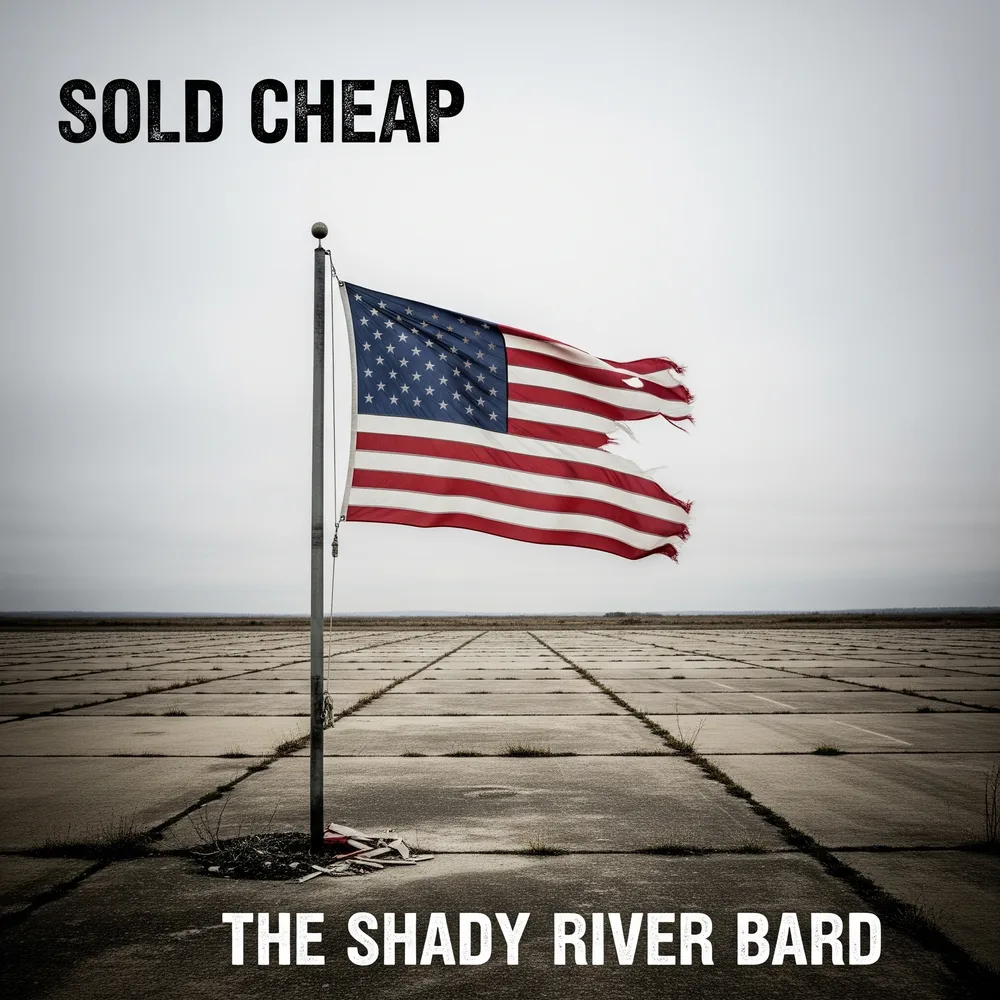

Sold Cheap
"An unflinching audit of a nation where communities, bodies, soldiers, and democracy itself have been stripped for parts and liquidated for short-term gain."
Sold Cheap is The Shady River Bard's 12-track sonic documentary chronicling the systemic devaluation of American life over the past half-century. Structured as a three-act tragedy, the album serves as an unflinching audit of a nation where communities, health, soldiers, and democracy itself have been stripped for parts and liquidated for short-term gain.
Table 1: The Ledger of 'Sold Cheap'
The mathematical heart of the album. Every tragedy in Sold Cheap is not an accident—it is the result of a calculated ledger transaction where human lives and communities were booked as debits so corporations could book credits.
4,500 union jobs & a community's future (Lordstown, OH)
Billions in recorded corporate profits (GM)
21,800 tons of buried toxic chemicals; generations of illness (Love Canal, NY)
Land sold for $1 with liability disclaimer (Hooker Chemical)
Nearly 500,000 American deaths from opioid overdoses
$35+ billion in OxyContin revenue; $10+ billion withdrawn by family (Sackler/Purdue)
A soldier's violated conscience ("Moral Injury")
Share of a $100+ billion annual Private Military Firm industry
A city's children poisoned by lead (Flint, MI)
Cost savings from not implementing corrosion control (MDEQ)
The promise of a secure retirement (Studebaker workers)
Pension obligations shed via "strategic bankruptcy"
An informed citizenry and democratic process
Continued upward redistribution of wealth via political distraction
In traditional corporate finance, externalities are treated as costs borne by nobody. In Sold Cheap, the Bard demonstrates that these costs are borne entirely by working-class families, sickened children, abandoned soldiers, and betrayed retirees.
The Three-Act Tragedy
The album's narrative guides the listener on a deliberate psychological journey—from the tangible shock of local betrayal to the exposed gears of global power, ending in the deafening noise of manufactured culture wars.
Act I: The Unraveling
The Human Cost of Systemic Failure
Focuses on the ground-level, human cost of systemic betrayal: the sudden shock of GM Lordstown closing, corporate environmental poisoning in Love Canal and Flint, the hollow recovery of Newton after Maytag, and the historical origin sin of pension theft at Studebaker in 1963.
Act II: The System Revealed
Architects & Mechanisms of Corporate Extraction
Pulls back the curtain to expose the architects and mechanisms: the Military-Industrial Complex, privatized warfare via Blackwater, the pharmaceutical empire of the Sackler family and Purdue Pharma, and the insidious revolving door of regulatory capture.
Act III: The Reckoning & The Noise
Psychological Fallout & The Great Distraction
Explores the psychological aftermath and systemic misdirection: moral injury in corporate suites, blatant congressional insider trading, manufactured culture wars used to distract from economic warfare, and an epic finale asking what remains when everything is bought and sold.
12-Track Interactive Vault
Explore the complete, unabridged lyrical, musical, and conceptual archive. Every track features verified verbatim stanzas, musician lead sheets with chords, arrangement notes, and the Bard's personal story.
Conclusion: The Album's Statement
'Sold Cheap' is more than a collection of songs; it is an indictment. It is a meticulously researched, passionately argued case that the defining struggles of our time are not the televised cultural battles that dominate our screens, but the silent, ongoing economic war that has left millions of Americans behind. This album does not aim to provide hope, but to provide a devastating clarity. By tracing the lines of influence from the corporate boardroom to the family home, from the halls of Congress to the foreign battlefield, it reveals a coherent system of extraction and devaluation. The album's final statement is a stark and uncomfortable question, posed not to provide an answer, but to linger in the conscience of the listener: If everything and everyone is for sale, what of value is left to hold on to? The album ends in the echoing silence that follows this question, the sound of a nation that has been hollowed out, one transaction at a time.
Thematic & Lyrical Touchstones
This section provides a toolbox of recurring concepts, voices, and a central metaphorical device to ensure lyrical and thematic consistency across the album, creating a cohesive artistic language.
Recurring Motifs
The Balance Sheet / The Ledger: This is the central visual and lyrical metaphor of the album. Lyrics will consistently juxtapose human cost with the cold, detached terminology of finance and accounting. This device will be used to frame suffering as a calculated business expense. Examples could include: "They wrote off the town as a non-performing asset," "Our pensions were an unfunded liability on their books," or "The moral injury was an acceptable operational risk." This motif highlights the cynical calculus that underpins the album's tragedies.
Rust & Chemical Decay: These are physical metaphors for the moral and societal decay being chronicled. The "rust bowl" of the Midwest 7, the corroded pipes of Flint, the chemical sheen on the water of Love Canal, and the rust on the padlocked factory gates in Lordstown all serve as tangible, visceral symbols of the consequences of abstract financial decisions and political neglect.
The Language of the Deal: The album will frequently use the sanitized, euphemistic language of business and politics to describe horrific events, highlighting the profound disconnect between the boardroom and the real world. Phrases like "strategic bankruptcy" 15, "pension reinsurance" 14, "optimized corrosion control treatment" 3, and "federal government corporation" 36 will be used ironically to expose their true, devastating meanings.
The Murky Water: This is a recurring image of obfuscation, poison, and moral contamination. It connects the "peat-colored water of the swamp" where Blackwater was founded, a name chosen for its dark, murky appearance 21, to the lead-poisoned water of Flint 3 and the toxic chemical sludge of Love Canal.9 This image serves as a powerful symbol for both the literal poisoning of communities and the moral murkiness of the systems that allow it to happen.
Narrative Voices (Personas for Songs)
The Transferred Worker: Based on the real-life story of Tom Davis from the documentary "Bring It Home," this voice is one of quiet grief and profound exhaustion.7 He is the GM worker forced to transfer to an out-of-state plant, separated from his wife and children, driving hundreds of miles every weekend just to maintain a semblance of family life. His lyrics would be filled with the mundane details of this fractured existence: the long hours on the highway, the missed school events, the strain of a life lived between two places.
The PMC Operator: This is a composite character speaking in the detached, professional jargon of the privatized military industry.2 His lyrics are cold and transactional, focused on the contract, the payment, and the mission objectives. He is the embodiment of "the business face of war." Beneath the professional veneer, however, there are flashes of the moral injury he denies feeling—the guilt and shame that are not part of the contract.27
The Grieving Parent: This voice is drawn from the powerful testimonies of mothers like Lois Gibbs at Love Canal 9 and the countless parents who lost children to the opioid crisis. This voice is a potent mix of raw, personal anguish and fierce, investigative anger. It pieces together the cause of a child's suffering, confronts the faceless corporations and captured regulatory agencies responsible, and refuses to be silenced.
The Corrupt Insider: This is a cynical, composite narrator—part politician trading stocks on nonpublic information 4, part corporate lobbyist shaping legislation from the inside.26 Their voice is slick, self-assured, and utterly devoid of empathy. They explain the "game" of regulatory capture, insider trading, and political manipulation not as a crime, but as smart business, revealing the amoral logic of the system.
The Whistleblower / The Analyst: This is an omniscient, detached narrative voice that acts as the album's anchor of truth. This voice delivers the cold, hard facts, quoting directly from sources like Eisenhower's farewell address 17, the text of the SACKLER Act 23, or academic analyses of wedge issues.31 This voice provides the clinical, undeniable evidence that grounds the album's more emotional narratives.
Key Table: The Ledger of 'Sold Cheap'
This table serves as the album's conceptual and lyrical centerpiece. It can be included in the liner notes, projected during live performances, and its language will be woven throughout the lyrics. It starkly quantifies the album's central thesis: human and societal costs are systematically converted into corporate and political profits. The act of placing human lives, communities, and moral principles in the "Debit" (Cost) column and financial figures in the "Credit" (Profit) column makes the cynical trade-off explicit and undeniable. It is a visual representation of the album's entire argument.